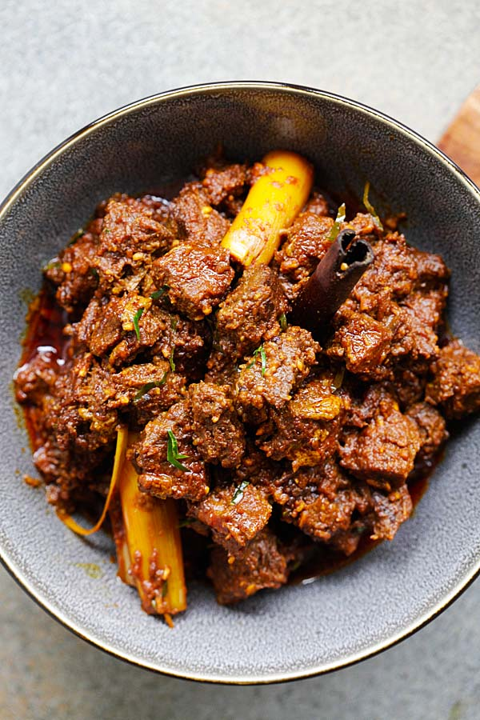

Return to Homepage
Beef Rendang

Rendang is a rich and tender coconut beef stew which is explosively flavorful and beef rendang is the most popular rendang.
Ingredients:
- 1 1/2 lbs. boneless beef short ribs, cubed
- 5 tbps cooking oil
- 1 stick cinnamon
- 3 cloves
- 3 star anise
- 3 cardamom pods
- 1 lemongrass, cut into 4-inch length
- 1 cup thick coconut milk/cream
- 1 cup water
- 2 tsp tamarind pulp
- 6 kaffir lime leaves, finely sliced
- 6 tbsp kerisik
- 1 tbsp sugar
- salt to taste
Spice Paste:
- 5 shallots
- 1 inch galanghal
- 3 lemongrass, white part only
- 5 cloves garlic
- 1 inch ginger
- 10-12 dried chilies
Steps:
- Rendang is a rich and tender coconut beef stew which is explosively flavorful and beef rendang is the most popular rendang.
- Heat the oil in a stew pot, add the spice paste, cinnamon, cloves, star anise, and cardamom and stir-fry until aromatic. Add the beef and the pounded lemongrass and stir for 1 minute. Add the coconut milk, tamarind juice, water, and simmer on medium heat, stirring frequently until the meat is almost cooked. Add the kaffir lime leaves, kerisik (toasted coconut), sugar or palm sugar, stirring to blend well with the meat.
- Lower the heat to low, cover the lid, and simmer for 1 to 1 1/2 hours or until the meat is really tender and the gravy has dried up. Add more salt and sugar to taste. Serve immediately with steamed rice and save some for overnight.
Scroll Up